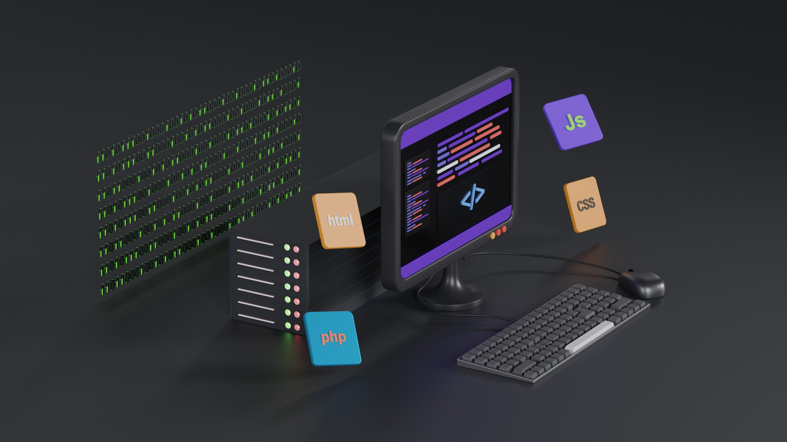
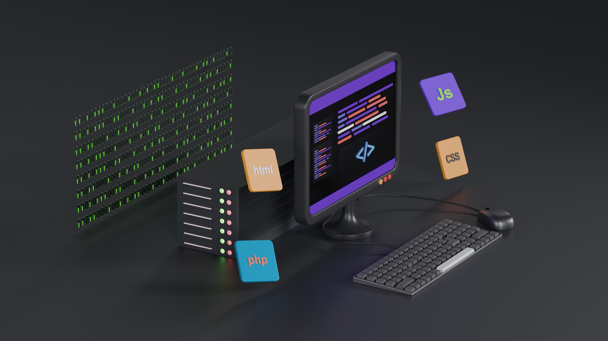

CSS
종속형 시트 또는 캐스케이딩 스타일 시트는 마크업 언어가 실제 표시되는 방법을 기술하는 스타일 언어로, HTML과 XHTML에 주로 쓰이며, XML에서도 사용할 수 있다. W3C의 표준이고, 레이아웃과 스타일을 정의할 때의 자유도가 높다. 기본 파일명은 style.css이다.
종속형 시트 또는 캐스케이딩 스타일 시트는 마크업 언어가 실제 표시되는 방법을 기술하는 스타일 언어로, HTML과 XHTML에 주로 쓰이며, XML에서도 사용할 수 있다. W3C의 표준이고, 레이아웃과 스타일을 정의할 때의 자유도가 높다. 기본 파일명은 style.css이다.
